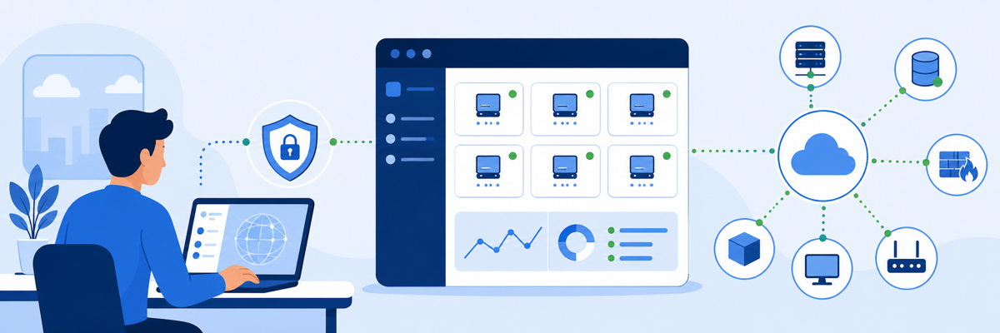
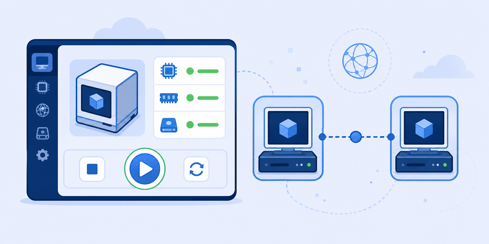
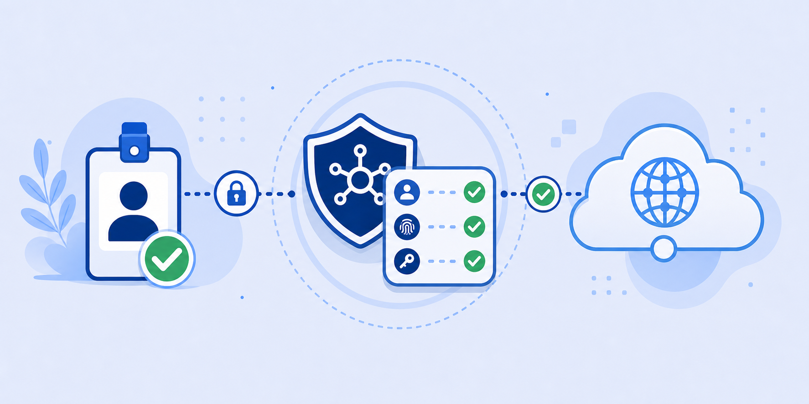
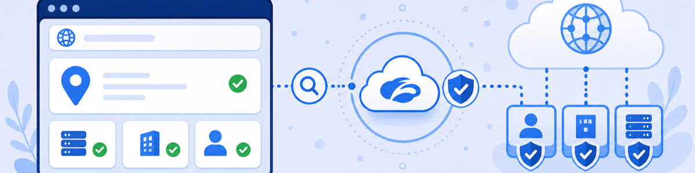

Lab 0: Connecting to the Virtual Lab
LAB 0
Scenario: Before any Browser Isolation policy can fire, your virtual machine must be running and Zscaler Client Connector must be authenticated. In this lab you will start the Client PC VM, log in to ZCC as the Marketing department test user, and confirm that web traffic is forwarded through the Zscaler cloud.

THINK FIRST · ZCC CONNECTIVITY
Browser Isolation is enforced cloud-side by the Zscaler proxy — it cannot act on traffic that ZCC never forwards. Every BI lab in this guide depends on ZCC being authenticated and active before you start.
- ZCC tunnels device traffic to ZIA before any policy is evaluated. What happens to Browser Isolation policies if ZCC is disabled or unenrolled on the endpoint?
- The lab uses a Marketing (MKT) department test user. Why does department assignment matter for the BI policies you will test in later labs?
- If ip.zscaler.com confirms your traffic is routing through Zscaler, but the ZIA portal shows the user as Unauthenticated, what would you check first?
Task 0.1: Start the Lab Environment
1 Start the Skytap Pod
- Navigate to the Skytap Access URL provided in your lab confirmation email.
- Ensure all VMs are selected and click Play to start them.
- Wait for the Corp: Client PC VM to reach Running status before continuing.
Note: VMs start in stages — allow a few minutes for all machines to be ready before proceeding.

My Questions
My Notes
Task 0.2: Log In to Zscaler Client Connector
1 Authenticate ZCC as the Marketing Test User
- On the Client PC VM, open Zscaler Client Connector from the system tray.
- Enter the username:
<prefix>-MKT@thezerotrustexchange.comand click Login, then Next. - Enter the Session Password: <Session Password> and click Sign in.
Caution: At the Stay signed In? prompt, click No.
- ZCC minimises to the system tray. Right-click the Zscaler icon and select Open Zscaler.
- Confirm: Private Access: ON, Internet Security: ON, Authentication Status: Authenticated, Network Type: Off-Trusted Network.

My Questions
My Notes
Task 0.3: Verify Traffic Routing Through Zscaler
1 Confirm the Zscaler Cloud is Active
- Open a browser window and navigate to
http://ip.zscaler.com. - Confirm the page reads: "You are accessing the Internet via Zscaler Cloud."
- Note the IP address displayed — this is a Zscaler data centre IP, not your own.
- In a new tab, navigate to
https://www.ipaddress.myand look up the IP. It should resolve to Zscaler Inc.

My Questions
My Notes
MENTAL NOTE
Browser Isolation requires ZCC to be authenticated and forwarding traffic. ZIA policies — including BI — are enforced cloud-side; the endpoint is not modified. Always verify routing with ip.zscaler.com before starting a BI lab.